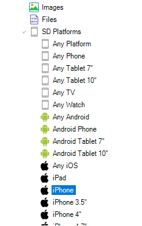
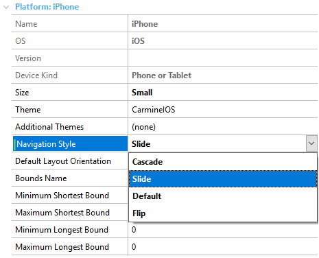
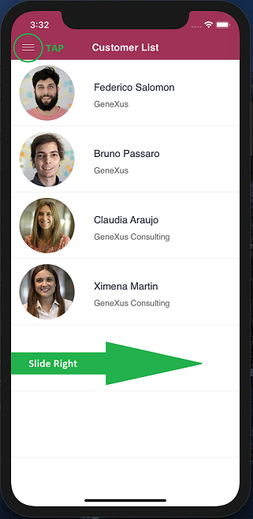
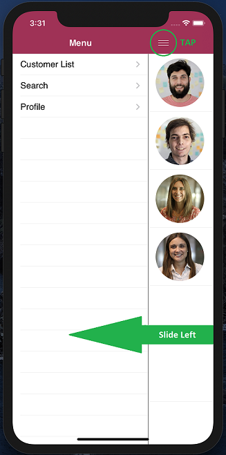

Slide Navigation Style
The slide navigation style has gained popularity because many apps are using it, including Gmail, Facebook, and Youtube. Many other apps use this navigation style to provide a better user experience. For example, let's set the main menu (Menu for Smart Devices) to be available from any layout, regardless of the invocation depth level you are in. You're always able to slide right to have the main menu appear. GeneXus has added the possibility to use this navigation style. How to develop GeneXus apps that have Slide navigation styleThe only thing needed is to define that the slide navigation style is going to be used for a certain platform. Go to Customization / SD Platforms:  and choose the slide navigation style  Once this is done your application will use this navigation style. About slide navigation styleWhen the application starts up, the first screen you see is the first item of your "Menu for Smart Devices" structure. In this screen you have the following interaction options:  By sliding right or tapping on the Menu icon at the top left corner, you can go to the menu. The Menu for Smart Devices will appear on almost all screens.  By tapping on the menu button at the top right corner or sliding left in any part of the screen, the menu will hide again. By tapping on any of the options, it will take you to the object. CustomizationThe process to customize the Menu for Smart Devices grid UI is the same as for the other navigation styles. The menu object has a class property to assign a theme class to it. According to Google Specifications, the size of the Slide Menu must not be changed. AvailabilityThis feature is available for iOS as of GeneXus X Evolution 2 Upgrade 3 and for Android as of GeneXus X Evolution 2 Upgrade 4 ScopeGenerators Smart Devices (iOS, Android) See it in action
Videos
|

| Backlinks | |
| Application Colors Properties group | |
| Navigation Style property | Slide.Start event |